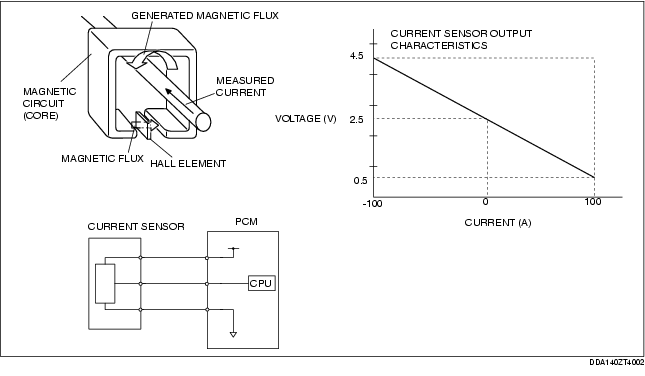

Current sensor operation [ZY]
• Current sensor detects current flowing to the negative battery cable as the battery charge/discharge current.
• Magnetic flux proportionate to the current flowing to the negative battery cable (measuring current) is generated on the magnetic circuit of the current sensor.The magnetic flux is passed through the hall element, and proportionate output voltage to the magnetic flux density is generated due to the Hall effect.
